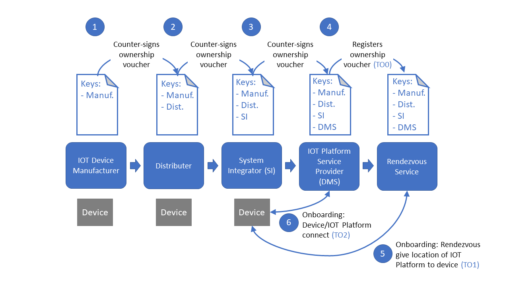

Introduction¶
Secure Device Onboard is a flexible software solution that simplifies and automates the process of onboarding IoT devices. By “onboard” we mean the process by which a device establishes its first trusted connection with a device management service.
Today, organizations that deploy IoT devices are struggling with manual methods to securely connect devices with IoT platforms. Traditional onboarding processes are time intensive and require IT expertise. The Secure Device Onboard solution simplifies this process for end customers while simultaneously establishing trust across all organizations who manufacture, distribute, or sell the device and associated IoT solutions.
During deployment of a device enable with the Secure Device Onboard solution, all the installer needs to do is add power to the device and connect it to the Internet. The device automatically and rapidly connects to the IoT platform in a secure and trusted manner. Secure Device Onboard combines embedded hardware security credentials with a chain-of-ownership security credential and Rendezvous service to secure the onboarding process and broker the connection to the authorized device management service provider. Today Secure Device Onboard supports Intel® Enhanced Privacy ID (Intel® EPID) and Elliptic Curve Digital Signature Algorithm-based embedded hardware security credentials.
Devices enabled with Secure Device Onboard technology work with any IoT cloud service providers that have enabled their service to work with Secure Device Onboard. This allows manufacturers to reduce the number of SKUs they need to securely connect with cloud services.
Secure Device Onboard Entities¶
The Secure Device Onboard process involves interactions between a number of different entities that participate in the process. Those include:
Manufacturer - The manufacture is responsible for loading Secure Device Credentials into a device. They are also directly or indirectly responsible for installing software onto the device that supports the Secure Device Onboard protocols required for device discovery and transfer of ownership.
Device - The device runs software which supports the Secure Device Onboard protocols required for devices. The device is initialized with credentials which securely identifies the device.
Owner - When a device is transferred to an owner who intends to install the device in their network, the owner (typically the owner's IOT Platform Service) contacts a Rendezvous Service to register the device and indicate where the device is to make contact with the IOT Platform Service.
Rendezvous Service - One or more Rendezvous Services operates on the Internet (or in some cases on an intranet). The Rendezvous service supports device registration by the owner (described above) and also provides a well-known endpoint that devices can connect to discover how to contact their owner's IOT Platform Service. The Rendezvous Service supports the Secure Device Onboard protocols required for owner registration and device discovery.
IOT Platform Service - Owners of devices typically use a IOT Platform service (also known as a Device Management Service) to manage their devices. The IOT Platform Service must support the Secure Device Onboard protocols required to register devices with the Rendezvous service and to provide devices with the information required to connect to the owner’s network.
Secure Device Onboard Protocol Specification¶
The Secure Device Onboard Protocol Specification defines a set of protocols for communications between the entities that participate in the Secure Device Onboard process. Those protocols are:
Device Initialization Protocol (DI) - This protocol defines how credentials are inserted into a device during the manufacturing process.
Transfer Ownership Protocol 0 (TO0) - This protocol defines how an owner of a device enabled with Secure Device Onboard communicates with a Rendezvous Service to indicate that it has taken ownership of a device.
Transfer Ownership Protocol 1 (TO1) - This protocol defines how a device communicates with a Rendezvous Service to identify itself and discover how to make contact with its owners IOT Platform.
Transfer Ownership Protocol 2 (TO2) - This protocol defines how a device communicates with its owners IOT Platform to establish trust and transfer ownership.
Details of the Secure Device Onboard protocol can be found in the Secure Device Onboard Protocol Specification.
Secure Device Onboard Software¶
The Secure Device Onboard project provides software that helps simplify the implementation of an end-to-end Secure Device Onboard capability. The following components are available:
Client SDK - The Client SDK provides devices with an implementation of the DI protocol, which initializes the device with credentials, the TO1 protocol, which connects the device to a Rendezvous Service, and the TO2 Protocol, which connects the device to an IOT Platform Service. The Client SDK supports Linux on X86 processors, as well as Linus and SELinux on ARM processors.
Manufacturing Toolkit - The Manufacturing Toolkit software enables the manufacturer to load credential into devices. It implements the DI protocol, and includes support for database storage of credentials and is designed to integrate into the manufacturers IT processes.
Reseller Toolkit - The Reseller Toolkit enables distributors and System Integrators to manage the ownership credential over the devices lifetime. It implements the DI protocol.
Rendezvous Service - The Rendezvous Service software provides a complete Rendezvous service, and implements the TO0 and TO1 protocols required for device registration and discovery. It can be run in the cloud or on-premise and includes an interface to support key attestation.
IOT Platform SDK - The IOT Platform SDK provides micro-services to facilitate integration of an IOT Platform in the Secure Device Onboard processes. It implements the TOO protocol required for device registration, and the TO2 protocol required for device ownership transfer.
Protocol Reference Implementation - The Protocol Reference Implementation provides a self-contained implementation of the Secure Device Onboard protocols, which can be used as a reference implementation, as a place to get started prototyping new protocol features, or as a validation tool
A directory of documentation and source repositories for the Secure Device Onboard software can be found on the Reference page.
The Secure Device Onboard Process¶
This section describes a typical process in which Secure Device Onboard is used to automatically and securely onboard a device onto an owners network. Those process include:
Device Initialization - A manufacturer initializes a device enabled with Secure Device Onboard Client software by setting the initial credentials in the device’s firmware, copying required files to the device’s OS, and storing the required security data in a backend IT system.
Credential Management – The manufacturers and supply chain integrators run a tool to manage security keys and ownership credentials that correspond to each device. These credentials do not reside on the device and are used to negotiate trust as devices are bought and sold.
Transfer To IoT Platform – The ownership credentials are imported into an SDO-enabled IoT Platform.
Device Registration – The ownership credentials are synchronized between the device management service and the rendezvous server.
Onboarding - The process of verifying the device identity with the rendezvous server and brokering a trusted connection to the intended IoT platform when a device is powered on and connected to the Internet.
The following diagram shows an example of a possible IoT supply chain and the steps taken by each participant in the Secure Device Onboard service. Each step is described in more detail in following sections.
Enablement and Onboarding Process 
Step 1: Manufacturing¶
The manufacturer sets up a manufacturing station that uses the Secure Device Onboard Manufacturer Toolkit to initialize the device. Device initialization puts the Secure Device Onboard client software and security credentials on the device.
Device initialization also creates an ownership voucher. The ownership voucher is a digital document that securely records changes in ownership. The ownership voucher travels with the device but is never physically on a device, which is similar to, for example, a shipping invoice. Each device has a unique ownership voucher. The ownership voucher contains the following information:
Device GUID: A unique string that identifies the device
Credential ID: A reference to the ownership voucher
Rendezvous Server Location: One or more URIs identifying where a Secure Device Onboard Rendezvous Service can be contacted by the device
Manufacturers public key: A key uniquely identifying the manufacturer of the device
Behind the scenes, the Manufacturer Toolkit uses the Device Initialize (DI) protocol to perform device initialization.
After device initialization is complete, the manufacturer associates the ownership voucher with the device, for example, by associating the GUID with the device serial number. For tracking, the manufacturer can also print the GUID on a label on the device box.
When the manufacturer sells the device to a distributor, the manufacturer acquires the distributor’s public key as a part of the ordering process. The manufacturer then uses the Manufacturer Toolkit to counter-sign the ownership voucher. This requires adding the distributor’s public key to the ownership voucher. The manufacturer then ships the device to the distributor and sends the ownership voucher to the distributor via either a file or through B2B integration.
Step 2: Distribution¶
The distributor receives the device and ownership voucher from the manufacturer. Like the manufacturer, the distributor associates the ownership voucher with the device, for example, by associating the GUID with the device serial number.
When the distributor sells the device to the system integrator or another retailer, the distributor acquires the buyer’s public key as a part of the ordering process. The distributor then uses SDO reseller toolkit to counter-sign the ownership voucher. The distributor then ships the device to the buyer and sends the ownership voucher via either a file or through B2B integration.
The preceding process continues until the device is sold to a system integrator.
Step 3: System Integration¶
The system integrator receives the device and ownership voucher from the distributor. Like the distributor, the system integrator associates the ownership voucher with the device, for example, by associating the GUID with the device serial number.
The system integrator acquires the IoT Platform provider’s public key and uses the Secure Device Onboard Reseller Toolkit to counter-sign the ownership voucher for the last time. The system integrator then sends the ownership voucher to the IoT Platform service provider via either a file or through B2B integration.
Step 4: Ownership¶
The IoT Platform provider registers the ownership voucher with the Rendezvous Service. The Rendezvous Service may be operated by a cloud service provider, the IOT Platform service provider, or other service provider entity. Behind the scenes, the IOT Platform uses the Transfer Ownership 0 (TO0) protocol to communicate with the Rendezvous server.
To facilitate easy integration with Secure Device Onboard, the IOT Platform can use the Secure Device Onboard IOT Platform SDK, which implements the protocol features required by the IPT Platform to communicate with the Rendezvous service, and provides an easy REST-based interface to communicate between the SDK components and the IOT Platform.
Step 5: Device Discovers IOT Platform¶
At this point, the system integrator installs the device, applies power, and connects it to the Internet. The device uses the location of the rendezvous server provided in step 1 to contact the Rendezvous Service, whereupon it receives a URI indicating where to connect to the IoT platform provider.
Behind the scenes, the Secure Device Onboard Client SDK software uses the Transfer Ownership 1 (TO1) protocol to communicate with the Rendezvous Service.
Note that ideally, the system integrator waits to install the device until it has received confirmation from the IoT Platform that Step 4 is complete. However, if the device contacts the rendezvous server before Step 4 is complete, the device will continue to retry the connection to the server until it gets the IoT Platform location.
Step 6: Device Onboards¶
After receiving the IoT Platform URI, the device contacts the IoT platform. The IoT platform provides new security credentials. The credentials programmed during device initialization are now replaced with the new credentials. Behind the scenes, the device uses the Transfer Ownership 2 (TO2) protocol to communicate with the IOT Platform SDK.
At this point, the onboarding is complete. The system integrator and IoT Platform can now complete additional provisioning steps on their own because a trusted connection has been established between the device and the IoT Platform.
Next Steps¶
Contributors¶
Contributors can get started by visiting the Secure Device Onboard Community page.
Developers and Integrators¶
Developers and Integrators can take the next step by reviewing the documentation for the components they are interested in.
The Reference page provides links to all of Secure Device Onboard documentation mentioned here, links to the Secure Device Onboard project source repositories, and a glossary of Secure Device Onboard terminology. The Releases page provide links to Secure Device Onboard binary releases.
The Secure Device Onboard Protocol Specification provides developers with the details of protocol operation.
The Protocol Reference Implementation provides a self-contained implementation of the Secure Device Onboard protocol, which can be used as a reference implementation, as a place to get started prototyping new protocol features, or as a validation tool
All-In-One Demo¶
The All-In-One Demo runs the Rendezvous Service, a simulated IOT Platform using the IOT Platform SDK, and the Manufacturing Toolkit. Using it, you can run a device enable with the Client SDK software through the entire Secure Device Onboard lifecycle.
Manufacturers¶
Manufacturers interested in implementing support for Secure Device Onboard in their factories can learn more by referring to the Secure Device Onboard Manufacturer Enablement Guide.
Distributers and Resellers¶
Distributers and resellers interested in implementing support for Secure Device Onboard in their business processes can learn more by referring to the Secure Device Onboard Reseller Enablement Guide
IOT Platform Providers¶
IOT Platform Providers interested in implementing support for Secure Device Onboard in their IOT Platforms can learn more by referring to the Secure Device Onboard IoT Platform Integration SDK Reference Guide
Cloud Service Operators¶
Cloud Service Operators interested in supporting Secure Device Onboarding in their IOT services can learn more by referring to the Secure Device Onboard Protocol, the Rendezvous Service implementation, and the Protocol Reference Implementation.